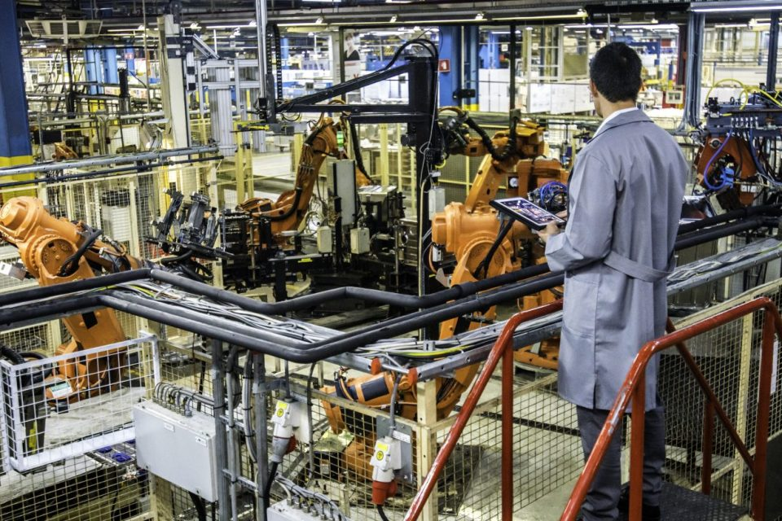

La Ciencia de Datos ha transformado múltiples sectores al ofrecer herramientas y metodologías para analizar datos y tomar decisiones fundamentadas en información precisa. Desde el ámbito minorista hasta el campo de la atención médica, la Ciencia de Datos se ha convertido en un componente esencial en diversas industrias, posibilitando la extracción de valiosos conocimientos, la automatización de procesos y la optimización de operaciones. En esta introducción, exploraremos diversas aplicaciones destacadas de la Ciencia de Datos en diferentes campos, mediante el análisis de casos de estudio y ejemplos prácticos.
Ciencia de Datos CD y PC
Usos en distintos campos
Comercio Minorista
Esta disciplina ha proporcionado a las empresas minoristas herramientas poderosas para comprender mejor a sus clientes, personalizar la experiencia de compra y optimizar toda la cadena de suministro. A través del análisis de datos, se ha logrado una comprensión más profunda de los patrones de compra, lo que ha llevado a una toma de decisiones más informada y estratégica.
Una de las áreas donde la Ciencia de Datos ha tenido un impacto notable es en la predicción de la demanda de productos. Las empresas minoristas ahora pueden recopilar y analizar datos históricos de ventas, patrones estacionales, tendencias del mercado y factores externos, como el clima, para predecir con mayor precisión la demanda futura de productos. Esta información es invaluable para la planificación de inventario, la gestión de la cadena de suministro y la optimización de las operaciones comerciales.
Además, la segmentación de clientes ha alcanzado un nivel sin precedentes gracias a las técnicas de análisis de datos. Las empresas minoristas pueden utilizar algoritmos avanzados para identificar grupos de clientes con comportamientos y preferencias similares. Esta segmentación permite una personalización más efectiva de la experiencia de compra, ya que las empresas pueden ofrecer ofertas y promociones específicas para cada segmento, aumentando la satisfacción del cliente y fomentando la fidelidad a la marca.
La recomendación de productos personalizados es otro aspecto clave donde la Ciencia de Datos ha dejado su huella en el comercio minorista. A través del análisis de datos de comportamiento de compra y preferencias individuales, las empresas pueden utilizar algoritmos de recomendación para ofrecer productos relevantes y personalizados a cada cliente. Esto no solo mejora la experiencia de compra del cliente, sino que también impulsa las ventas y la retención de clientes.
Finanzas
En el ámbito financiero, la Ciencia de Datos ha revolucionado la forma en que se gestionan los riesgos y se detectan los fraudes. Los algoritmos de aprendizaje automático son utilizados por instituciones financieras para analizar grandes volúmenes de datos y detectar patrones anómalos que podrían indicar actividad fraudulenta. Estos algoritmos pueden identificar transacciones sospechosas en tiempo real, permitiendo una respuesta rápida y eficaz para mitigar el riesgo de pérdidas financieras.
Además de la detección de fraudes, la Ciencia de Datos se utiliza en el análisis de riesgos crediticios. Mediante el análisis de datos históricos de crédito y otros factores relevantes, como el historial de pagos y el nivel de endeudamiento, los algoritmos de aprendizaje automático pueden predecir el riesgo crediticio de los clientes con una precisión sin precedentes. Esto permite a las instituciones financieras tomar decisiones informadas sobre la concesión de préstamos y créditos, minimizando el riesgo de incumplimiento y maximizando la rentabilidad.
En conclusión, la Ciencia de Datos ha demostrado ser una fuerza transformadora en el comercio minorista y las finanzas, proporcionando herramientas y técnicas poderosas para optimizar operaciones, mejorar la experiencia del cliente y mitigar riesgos. A medida que estas industrias continúan evolucionando en la era digital, el papel de la Ciencia de Datos seguirá siendo fundamental para impulsar la innovación y el crecimiento económico.
Salud y atención médica
En el ámbito de la salud y la atención médica, la Ciencia de Datos ha impulsado avances significativos en el diagnóstico, el tratamiento y la predicción de enfermedades. Los modelos de aprendizaje automático se utilizan para analizar grandes conjuntos de datos médicos, incluidos registros electrónicos de salud, imágenes médicas y datos genómicos, con el fin de identificar patrones y correlaciones que puedan mejorar la precisión del diagnóstico.
Un ejemplo destacado de esto es el uso de la Ciencia de Datos en la detección temprana de enfermedades como el cáncer. Mediante el análisis de imágenes médicas y datos clínicos, los algoritmos pueden identificar señales sutiles de la enfermedad que pueden pasar desapercibidas para los médicos humanos. Esto permite un diagnóstico más precoz y preciso, aumentando así las posibilidades de éxito del tratamiento y mejorando los resultados para los pacientes.
Además, la Ciencia de Datos se utiliza para desarrollar tratamientos personalizados mediante el análisis de datos genómicos y biomédicos. Al entender mejor la biología subyacente de las enfermedades y las respuestas individuales a los tratamientos, los médicos pueden diseñar terapias específicas que maximicen la eficacia y minimicen los efectos secundarios para cada paciente.
Manufactura

La industria manufacturera ha sido una de las principales beneficiarias de los avances en la Ciencia de Datos, aprovechando herramientas y técnicas analíticas para mejorar la eficiencia operativa, elevar la calidad del producto y prever fallas en los equipos. La implementación estratégica de la Ciencia de Datos ha permitido a las empresas manufactureras optimizar sus procesos de producción, reducir costos y aumentar la competitividad en un mercado cada vez más exigente. En este ensayo, exploraremos cómo la Ciencia de Datos ha revolucionado la industria manufacturera y ha redefinido los estándares de excelencia en este campo.
Una de las principales aplicaciones de la Ciencia de Datos en la industria manufacturera es la optimización de la eficiencia operativa. Mediante el análisis de datos generados por sensores y sistemas de monitoreo en tiempo real, las empresas pueden identificar cuellos de botella, eliminar redundancias y mejorar los flujos de trabajo para maximizar la productividad. Por ejemplo, al utilizar algoritmos de aprendizaje automático, las empresas pueden analizar datos de producción históricos y en tiempo real para identificar patrones y tendencias que indiquen oportunidades de mejora en los procesos de fabricación.
Además, la Ciencia de Datos se utiliza para mejorar la calidad del producto al identificar y prevenir defectos de manera proactiva. Mediante el análisis de datos de control de calidad y retroalimentación del cliente, las empresas pueden identificar áreas de mejora en los procesos de fabricación y tomar medidas correctivas antes de que los defectos afecten la calidad del producto final. Por ejemplo, los algoritmos de detección de anomalías pueden identificar patrones inusuales en los datos de producción que podrían indicar la presencia de defectos, permitiendo a las empresas intervenir rápidamente para evitar que se conviertan en problemas más grandes.
Otra aplicación clave de la Ciencia de Datos en la industria manufacturera es la predicción de fallas en los equipos. Al analizar datos de sensores y registros de mantenimiento, las empresas pueden identificar patrones que indiquen un mayor riesgo de falla en los equipos y tomar medidas preventivas para evitar tiempos de inactividad no planificados. Por ejemplo, mediante el uso de modelos predictivos, las empresas pueden predecir cuándo es probable que ocurran fallas en un equipo específico y programar el mantenimiento preventivo en consecuencia, minimizando así el tiempo de inactividad y maximizando la disponibilidad de los activos.
Transporte y Logística
La Ciencia de Datos ha emergido como un pilar fundamental en la industria del transporte y la logística, revolucionando la forma en que se planifican y gestionan las operaciones, se optimizan las flotas y se prevé la demanda de servicios de transporte. A través del análisis avanzado de datos y la aplicación de modelos predictivos, las empresas de transporte pueden mejorar la eficiencia de sus operaciones, reducir costos y satisfacer de manera más efectiva las necesidades de sus clientes. En este ensayo, exploraremos cómo la Ciencia de Datos ha transformado el panorama del transporte y la logística, impulsando la innovación y mejorando la competitividad en un mercado dinámico y en constante evolución.
Una de las aplicaciones clave de la Ciencia de Datos en la industria del transporte y la logística es la mejora de la planificación y gestión de rutas. Al aprovechar datos históricos de tráfico, condiciones climáticas y patrones de demanda, las empresas pueden utilizar modelos predictivos para identificar las rutas más eficientes y evitar retrasos innecesarios. Por ejemplo, mediante el análisis de datos de GPS y sistemas de seguimiento de vehículos en tiempo real, las empresas pueden optimizar las rutas de entrega para minimizar los tiempos de viaje y maximizar la utilización de los recursos.
Además, la Ciencia de Datos se utiliza para optimizar la asignación de flotas, asegurando que los vehículos estén asignados de manera óptima para satisfacer la demanda de servicios de transporte. Al analizar datos de inventario, horarios de entrega y capacidades de carga, las empresas pueden determinar la combinación más eficiente de vehículos y rutas para maximizar la capacidad de carga y minimizar los costos operativos. Por ejemplo, mediante el uso de algoritmos de optimización, las empresas pueden identificar las mejores asignaciones de vehículos para satisfacer la demanda fluctuante en diferentes regiones y períodos de tiempo.
Otra aplicación importante de la Ciencia de Datos en la industria del transporte y la logística es la previsión de la demanda de servicios de transporte. Al analizar datos históricos de demanda, tendencias del mercado y factores externos, las empresas pueden desarrollar modelos predictivos para estimar la demanda futura de servicios de transporte y ajustar sus operaciones en consecuencia. Por ejemplo, mediante el uso de técnicas de aprendizaje automático, las empresas pueden predecir la demanda de servicios de entrega en diferentes regiones y horarios, permitiéndoles asignar recursos de manera más eficiente y satisfacer las necesidades de sus clientes de manera más efectiva.
Ejemplos prácticos
Estudios de caso destacados demuestran cómo la aplicación estratégica de la Ciencia de Datos puede generar resultados significativos y revolucionarios. A continuación, exploraremos algunos ejemplos prácticos que ilustran el impacto tangible de la Ciencia de Datos en diferentes campos.
Un caso de estudio destacado es el de Netflix, una de las plataformas líderes en transmisión de contenido. Netflix ha utilizado la Ciencia de Datos de manera innovadora para personalizar las recomendaciones de películas y series a sus usuarios. A través de algoritmos de aprendizaje automático, analiza el historial de visualización de los usuarios y genera recomendaciones basadas en patrones de comportamiento similares. Este enfoque ha demostrado ser altamente efectivo, mejorando la experiencia del usuario y aumentando la retención de clientes en la plataforma.
Otro ejemplo práctico que resalta el poder de la Ciencia de Datos es Google Translate. Esta herramienta de traducción utiliza técnicas avanzadas de procesamiento de lenguaje natural y aprendizaje automático para traducir texto entre diferentes idiomas. Basándose en modelos de traducción automática que aprenden de grandes conjuntos de datos multilingües, Google Translate ofrece traducciones cada vez más precisas y contextuales. Este ejemplo ilustra cómo la Ciencia de Datos puede superar barreras lingüísticas y facilitar la comunicación global de manera eficiente.
En el ámbito de la medicina, IBM Watson for Oncology es otro caso de estudio relevante que demuestra el potencial transformador de la Ciencia de Datos. Esta plataforma utiliza datos clínicos, registros médicos y literatura científica para ofrecer recomendaciones de tratamiento basadas en evidencia a los médicos que tratan pacientes con cáncer. Mediante el análisis de grandes volúmenes de datos, Watson for Oncology ayuda a los médicos a tomar decisiones informadas y personalizadas, mejorando así la calidad de la atención y los resultados para los pacientes.
Un ejemplo destacado de cómo la Ciencia de Datos ha transformado el comercio minorista es el caso de Amazon. La gigante del comercio electrónico utiliza algoritmos de aprendizaje automático para analizar los datos de navegación y compra de sus clientes, lo que le permite ofrecer recomendaciones de productos altamente personalizadas. Además, Amazon utiliza la información recopilada para optimizar su cadena de suministro, mejorando la eficiencia en la entrega y reduciendo los costos operativos.
Obra publicada con Licencia Creative Commons Reconocimiento Compartir igual 4.0